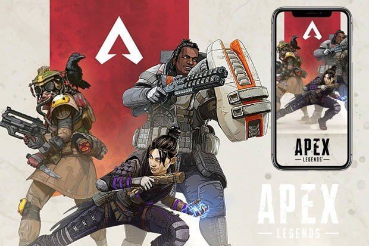

Apex:
Apex Legends is a free-to-play battle royale game developed by Respawn Entertainment and published by Electronic Arts.
It was released for Microsoft Windows, PlayStation 4, and Xbox One on February 4, 2019, without any prior announcement or marketing.
Initial release date:
February 4, 2019
Engine:
Source
Developer:
Respawn Entertainment
Platforms:
PlayStation 4, Xbox One, Microsoft Windows
Mode(s):
Multiplayer
Info
Apex Legends is a free-to-play battle royale game developed by Respawn Entertainment and published by Electronic Arts. It was released for Microsoft Windows, PlayStation 4, and Xbox One on February 4, 2019, without any prior announcement or marketing.
The gameplay of Apex fuses elements from a variety of video games, including Respawn's own Titanfall series, battle royale games, class-based shooters, and those with evolving narratives. Approximately sixty players are pitted against each other on an island in squads of three, with one player controlling where their squad lands. The squads then must scavenge for weapons and other resources to fight other squads, during which the play area gradually constricts in size until one squad remains, thus ending the match. The game also features care packages and the ability to revive your teammates within a certain amount of time. Communication with team members can be done through voice chat or through a ping system, allowing teammates to mark supplies, locations, and enemies with ease. The game features nine heroes to choose from (though three of them are locked by default), and features a microtransaction system for cosmetic items.
The concept for the game came to fruition during the development of a new Titanfall game, after EA's acquisition of Respawn in 2017. The sudden success of the battle royale genre prompted the developers to create one of their own that incorporates elements of the series, in addition to the concepts seen in games throughout the past decade. Following its release, the developers announced plans for cross-platform play, as well as ports for iOS, Android, and the Nintendo Switch, in the future.
Apex Legends received very positive reviews from critics, who praised its gameplay, progression system, and fusion of elements from various genres. Some considered it a worthy competitor to Fortnite Battle Royale, a similar game that had gained massive popularity in the previous year. The game surpassed over 25 million players by the end of its first week, and 50 million within its first month.
Development
Respawn Entertainment had previously created both Titanfall (2014) and its sequel Titanfall 2 (2016) while an independent studio; Electronic Arts supported the publishing of these titles, and in 2017 then acquired Respawn.[5]
While Respawn had started work on a potential Titanfall 3 game, they had been watching the landscape of gaming community around 2017, about when PlayerUnknown's Battlegrounds started to take off and popularized the battle royale genre. Respawn had already tested Titanfall concepts in a survival game format that they found worked well, and started experimenting with these concepts in a battle royale framework, though realized quickly that having the pilotable Titans (large mecha) would be highly disadvantageous to those on foot in battle royale, and instead focused on creating strong character classes that fit within the Titanfall universe.[6] Additionally, Respawn wanted to pursue a game that would take advantage of the potential revenues in free to play games, and came up with the concept of Apex, putting the bulk of the studio's effort to make an initial strong release and forgoing further development of a Titanfall 3. EA had skepticism in this approach and considered it risky, according to Respawn's Drew McCoy, but the success of Fortnite Battle Royale showed that such approaches were possible.[5]
In a unique move for EA, Respawn kept the development of Apex Legends as a secret until its announcement; McCoy stated they wanted players to form their own opinions of the game rather than from online forums, thus encouraging players to try the game rather than relying on marketing and other pre-release promotional content.[5]
Apex Legends is inspired by several shooters of the last decade: Bungie's Halo and Destiny which incorporated engaging combat systems with an evolving narrative, Ubisoft's Tom Clancy's Rainbow Six Siege which demonstrated the use of unique classes to dynamically change an otherwise simple formula, and Blizzard Entertainment's Overwatch for refining the hero shooter concept.[5] The game is built on the Source engine, the same as used for the previous Titanfall games.[7] The Smart Comm system was refined by playtesting the game for a month without the use of voice chat and using randomized names to experiment how they anticipated most players would experience the game.[8] The team tested changing some of the enumerated features like map size, the number of players in a match, and squad size, and found that 60 players in squads of three on the shipping map were the most fun to play, according to Respawn's CEO Vince Zampella. Respawn has not ruled out providing newer maps or alternate game modes in the future.[9]
Prior to launch, McCoy confirmed plans to implement cross-platform play into Apex Legends in the future. While this is planned, cross-progress and cross-purchases are not possible due to hardware limitations. McCoy also stated that they would also eventually like Apex Legends to come to iOS, Android and Nintendo Switch, though it is not currently planned.[10]
Tencent has stated that they are working with Electronic Arts to bring Apex Legends to China, helping to work the game through the country's strict approval process.[11]
Within the game's map, players found at least one small plush toy of the Loch Ness Monster, nicknamed Nessy, which had been also used in various Titanfall maps, and if shot at by a player, a brief message appears in the killfeed; Respawn's community managers have acknowledged that there may be a larger secret tied to these in the game.